骨格に合わせたデザイン照射
解剖学に基づき、
照射深度やラインを微調整。
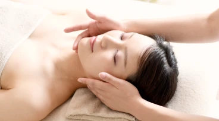
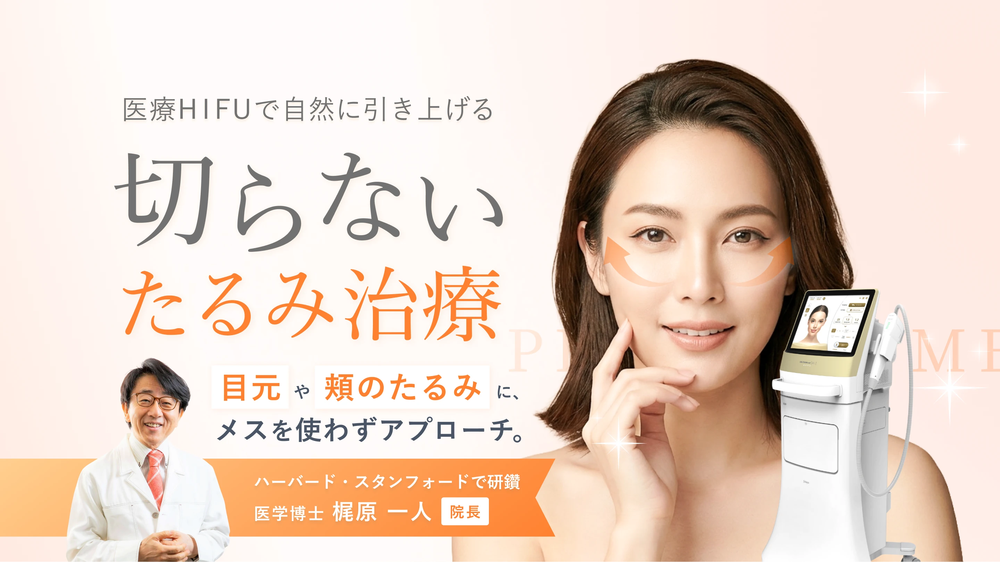
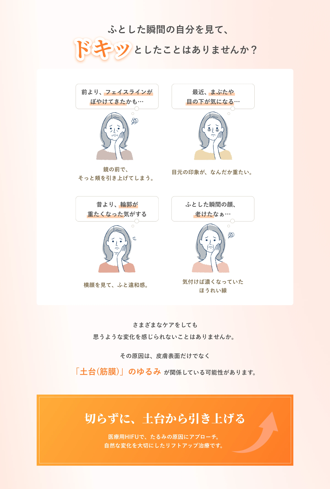
POLICY
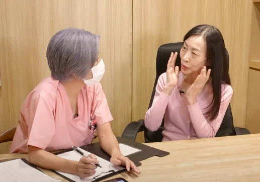
骨格から逆算する
オーダーメイド設計
骨格や筋肉のつき方を考慮した照射計画。
一人ひとりの状態を読み解き、
照射部位や深さを調整します。
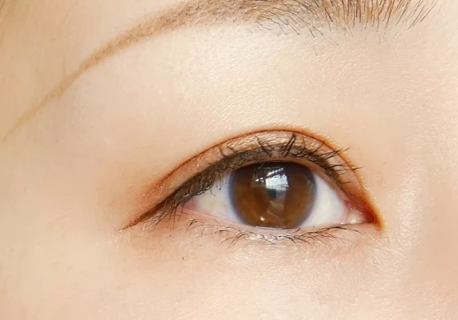
眼科医の知見に基づく
目元の「攻め」
眼には無数の神経が走っており、特に目元は細心の
注意が必要なエリアです。
眼科・眼窩の専門である院長が監修し、安全性を
担保しつつギリギリまで効果を引き出すアプローチを行います。
骨格から逆算する
オーダーメイド設計
医師が定める基準を満たした施術。
医療機関としての安全基準を大切にし
丁寧な照射を行っています。
解剖学に基づき、
照射深度やラインを微調整。

反応を見ながら、
効果的なパワーで照射。
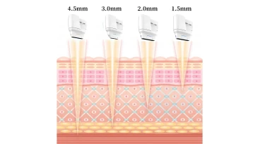
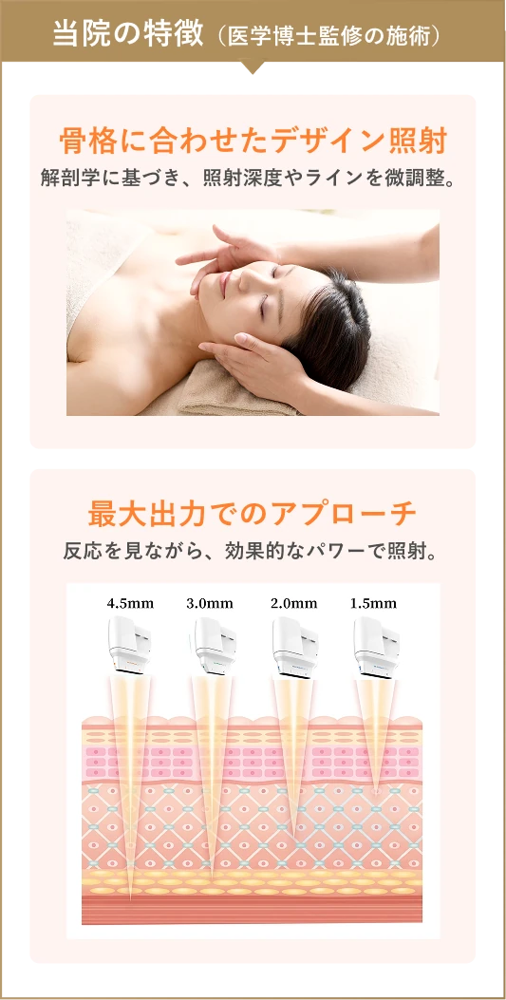
HIFUは、肌を切る手術ではありません。
だからこそ、どこに・どの深さで照射するか
によって
最終効果と印象が変わります。
当院では、状態を確認しながら、
部位や深さを微調整して 施術を行って
います。
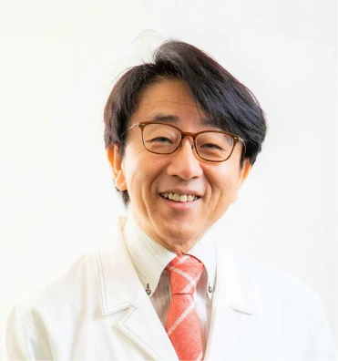
梶原 一人
Kazuto Kajiwara
「HIFUを受けたいけれど、失敗が怖い」
そんな不安をお持ちの方こそ、ぜひご相談ください。
顔には無数の神経や筋肉が複雑に走っています。
当院では、解剖学を熟知した医学博士・院長 梶原一人が監修のもと、安全かつ効果的な施術を提供しています。
MECHANISM
最新機器「ULTRAcel [zíː]」を使用し、肌の異なる層へ同時に働きかけます。
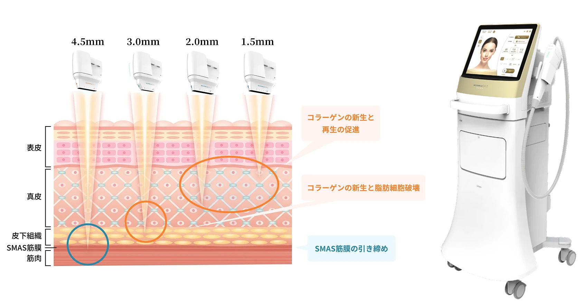
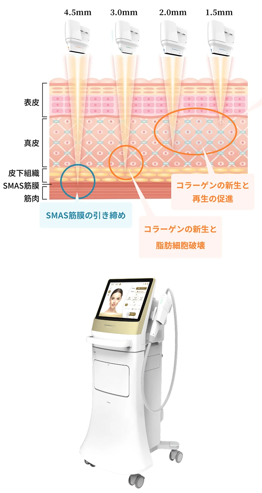
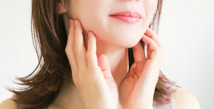
皮膚のさらに奥、手術でしかアプローチできなかった
「SMAS筋膜」に熱エネルギーを集中。
緩んだ土台をキュッと収縮させ、
強力にリフトアップします。
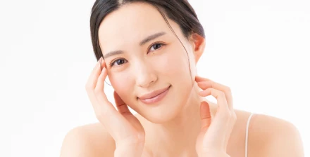
浅い層（真皮）にも熱を与えることで、
創傷治癒作用が働きコラーゲンが大量生成。
パンっとしたハリが生まれ、
毛穴や小ジワも目立ちにくくなります。
CASE STUDY
当院の照射による、実際の変化です。
フェイスライン / 小顔
30代女性 / 全顔照射
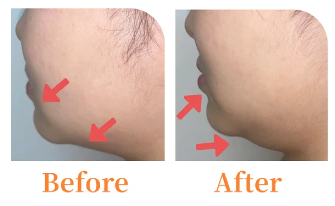
目元のたるみ / 重さ
50代女性 / 目元集中ケア
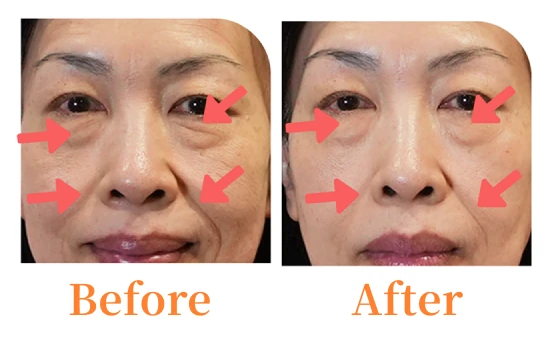
※写真はイメージです。効果には個人差があります。
CONCEPT
美容医療は、
特別な人のためのものではありません。
眼科の中にあるプライベートな空間で、
医学的根拠に基づいた「本物の美容」を。
広告費や内装費を抑えることで、
納得の適正価格を実現しました。
お困り事を聞き取り、
お悩みを理解するのが私たちの仕事です。
勧誘は一切しませんので、
心の内を全てお話しください。

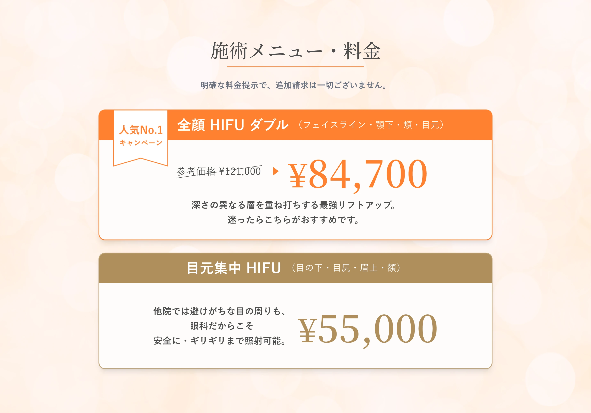
完全予約制のため、待ち時間はありません。
24時間受付のLINEからご予約ください。
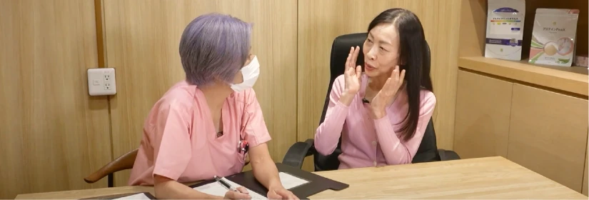
HIFUの説明やプランの説明だけでなく、
すべての肌悩みに合わせてカウンセリングします。
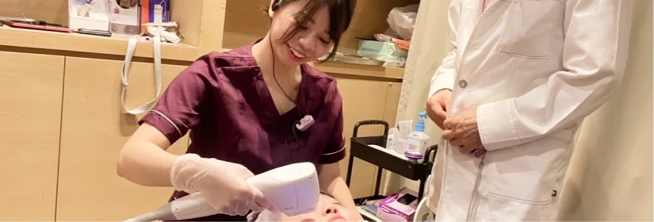
ジェルを塗布し、痛みの確認をしながら丁寧に照射します。
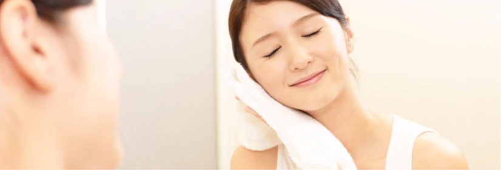
パウダールームを完備しております。
施術直後からメイクをしてお帰りいただけます。